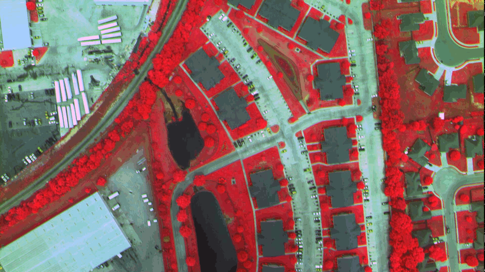

Inicio Rápido de Rasdaman¶
Rasdaman es un Gran Motor de Datos para análisis ad-hoc y flexibles de datos espacio-temporales multi-dimensionales de sensores, imágenes, simulaciones y estadísticas de tamaño ilimitado. El lenguaje de consulta de Servicio Web de Procesamiento de Cobertura (WCPS) es un estándar del Consorcio Geoespacial Abierto (OGC) que permite filtrado y procesamiento de coberturas ráster múltiples dimensiones, tales como sensores, simulación, imagen y estadísticas de datos mediante servicios web. Las consultas WCPS se traducen a lenguaje de interrogación rasdaman, rasql y se ejecutan en rasdaman. Esta guía de inicio rápido muestra cómo tener acceso y manipular un ejemplo de cobertura 2D usando lenguaje WCPS.
Contents
Configuración¶
El primer paso antes de probar cualquiera de las siguientes consultas es iniciar rasdaman y Tomcat. Abra el directorio Databases en el escritorio y, a continuación, Start Rasdaman Server. Espere de dos a tres minutos para que rasdaman y especialmente Tomcat se inicien por completo (una vez que el cliente web rasdaman se carga en el navegador).
Después, puede abrir Rasdaman-Earthlook Demo desde el mismo directorio, que lanzará un demostrador local en el navegador. Para obtener un tutorial más práctico, sin embargo, continúe con los siguientes ejemplos de aquí.
Ejecución de consultas WCPS¶
- Ya sea:
- Vaya al cliente web rasdaman, cambie a la pestaña ProcessCoverages e introduzca su consulta en los cuadros de consulta y presione enviar.
- Agregue su consulta en esta url: http://localhost:8080/rasdaman/ows?query=your_query y ejecútela usando un navegador.
Cobertura de ejecución¶
La cobertura de ejemplo que se utilizará posteriormente es una imagen de 6 MB como se muestra a continuación:
{kind=link}
Acceder a la cobertura completa¶
La consulta WCPS para acceder a la cobertura completa es como sigue:
for c in (NIR) return encode(c, "png")
haga click en coverage request para ejecutarlo en el navegador.
Seleccione un subconjunto de la cobertura¶
La consulta WCPS a un subconjunto de la cobertura es la siguiente:
for c in (NIR) return encode(c[i(0:500),j(0:500)], "png")
Haga click en la consulta subsequente para ejecutarlo en el navegador.
El resultado de la consulta es imagen como la siguiente:

Extracción de bandas de la cobertura¶
La consulta WCPS para accesar a la banda roja de la cobertura es la siguiente:
for c in (NIR) return encode(c.red, "png")
Haga click en la extracción de bandas para ejecutarlo; debe de poder ver la siguiente imágen, como resultado, en el navegador:

Operación aritmética: Extracción de NDVI de la cobertura¶
El NDVI (Índice de Vegetación de Diferencia Normalizada) es una medida de la probabilidad de la vegetación en teledetección, es decir, cuanto más cerca esté de +1 un píxel, más probable es que sean plantas. La consulta de WCPS para obtener NDVI de la cobertura es la siguiente:
for c in ( NIR ) return
encode(
(unsigned char) (
(((float)c.0 - (float)c.1) /
((float)c.0 + (float)c.1)) > 0
) * 255
, "png" )

¿Qué sigue?¶
- El tutorial rasdaman proporciona una introducción condensada a los conceptos detrás de rasdaman, rasql y el soporte de los servicios web de OGC.
- Aprenda más sobre el Lenguage Web Coverage Processing Service OGC estándar (inspirado en gran medida en rasdaman); un buen punto de partida es la página de documentación y tutoriales y Consultas WCPS SandBox.
- ¿Interesado en cobetura de datos y servicios en general? Visite la Wiki del Grupo de Trabajo de Dominio de Coberturas de OGC.
- Explore la documentación de rasdaman para aprender acerca de la administración de rasdman, su lenguage de consultas y su ingestión de datos.
- Visite la demo multi-dimensional para explorar los demos interactivos 1-D a 4-D. Los más pequeños son parte de OSGeoLive, aquellos que utilizan conjuntos más grandes (más allá de la capacidad de este disco), avanzan hacia el sitio de de normas de OGC .